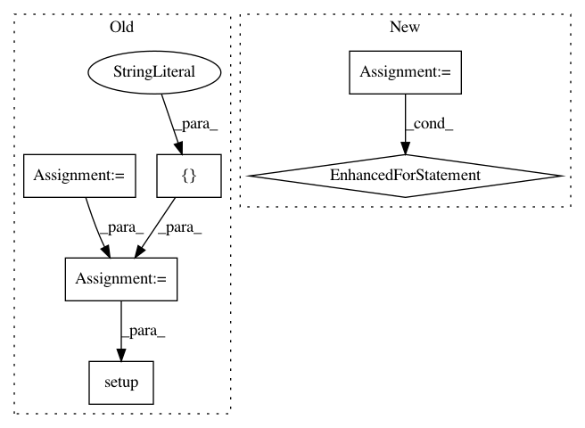

aea750051f7660cf61dbd2360a25ea0bd13efa3b,setup.py,,,#,34
Before Change
if platform.system() == "Darwin":
extra_compile_args = ["-stdlib=libc++"]
extra_link_args = ["-stdlib=libc++"]
else:
extra_compile_args = []
extra_link_args = []
EXT_MODULES = [
Extension(
name="mmcv._ext",
sources=[
"./mmcv/video/optflow_warp/flow_warp.cpp",
"./mmcv/video/optflow_warp/flow_warp_module.pyx"
],
include_dirs=[numpy.get_include()],
language="c++",
extra_compile_args=extra_compile_args,
extra_link_args=extra_link_args,
),
]
setup(
name="mmcv",
version=get_version(),
description="Open MMLab Computer Vision Foundation",
long_description=readme(),
keywords="computer vision",
packages=find_packages(),
classifiers=[
"Development Status :: 4 - Beta",
"License :: OSI Approved :: Apache Software License",
"Operating System :: OS Independent",
"Programming Language :: Python :: 2",
"Programming Language :: Python :: 2.7",
"Programming Language :: Python :: 3",
"Programming Language :: Python :: 3.4",
"Programming Language :: Python :: 3.5",
"Programming Language :: Python :: 3.6",
"Programming Language :: Python :: 3.7",
"Topic :: Utilities",
],
url="https://github.com/open-mmlab/mmcv",
author="Kai Chen",
author_email="chenkaidev@gmail.com",
setup_requires=["pytest-runner"],
tests_require=["pytest"],
install_requires=install_requires,
ext_modules=EXT_MODULES,
cmdclass={"build_ext": build_ext},
zip_safe=False)
After Change
// If first not installed install second package
CHOOSE_INSTALL_REQUIRES = [("opencv-python-headless>=3", "opencv-python>=3")]
for main, secondary in CHOOSE_INSTALL_REQUIRES:
install_requires.append(choose_requirement(main, secondary))
if sys.version_info < (3, 3):
install_requires.append("backports.shutil_get_terminal_size")
if sys.version_info < (3, 4):
install_requires.extend(["enum34", "pathlib"])
In pattern: SUPERPATTERN
Frequency: 3
Non-data size: 6
Instances
Project Name: open-mmlab/mmcv
Commit Name: aea750051f7660cf61dbd2360a25ea0bd13efa3b
Time: 2019-11-21
Author: rinatshigapov@gmail.com
File Name: setup.py
Class Name:
Method Name:
Project Name: explosion/thinc
Commit Name: 74687cc0a418af49418a80a62144222453af489f
Time: 2017-01-02
Author: honnibal+gh@gmail.com
File Name: thinc/neural/base.py
Class Name: Model
Method Name: __init__
Project Name: pymc-devs/pymc3
Commit Name: cc7b90f7864496035318623f611c3725d544dc60
Time: 2007-04-18
Author: anand.prabhakar.patil@15d7aa0b-6f1a-0410-991a-d59f85d14984
File Name: setup.py
Class Name:
Method Name: